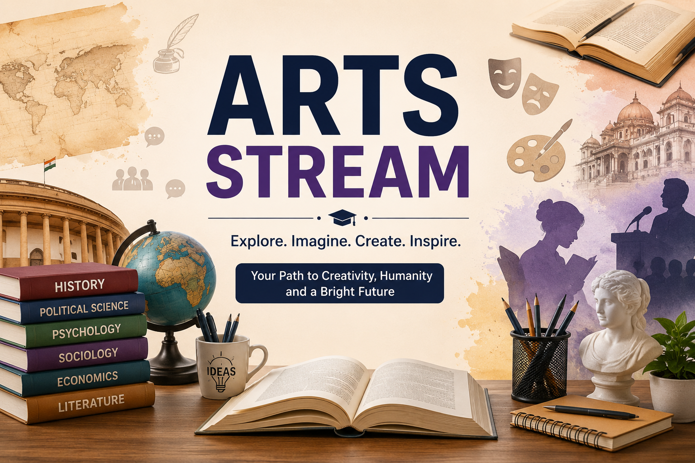

Arts Stream After 10th

The Arts Stream offers a wide range of opportunities for students interested in humanities, social sciences, creativity, and communication. It helps develop critical thinking, analytical skills, and a deeper understanding of society. With subjects like History, Political Science, Psychology, Sociology, and Literature, the Arts Stream opens the door to careers in education, law, civil services, media, design, and many other fields.
Topics Covered In This Page
- What is Arts Stream?
- Who Should Choose Arts?
- Why Choose Arts?
- Subjects in Arts Stream
- Skills Required
- Benefits of Arts Stream
- Career Options
- Courses After 12th Arts
- Government Jobs
- Private Sector Opportunities?
- Top Colleges
- Salary Expectations
- Advantages & Disadvantages
- Myths vs Reality
- What is Arts Stream?